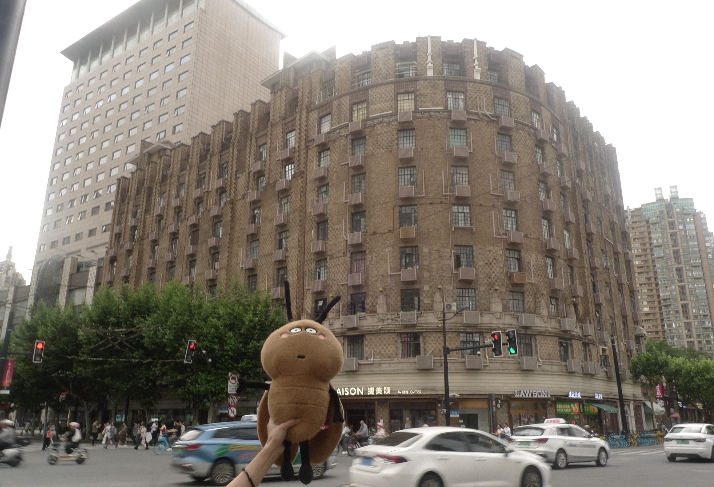
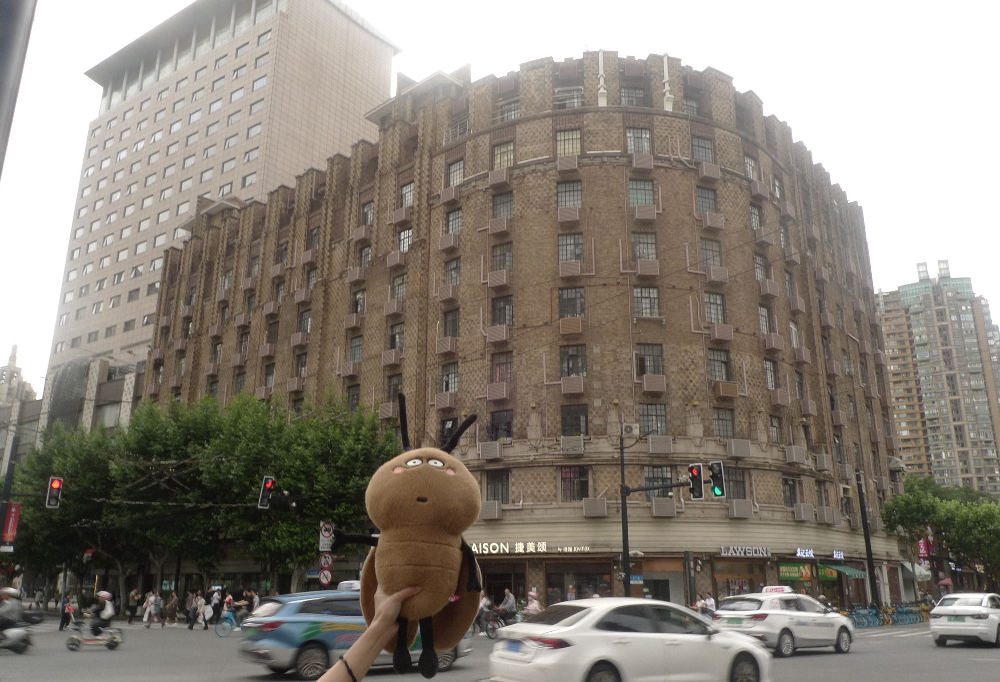

Denis Apartments Located at the intersection of Nanjing West Road and Shimen Second Road, Denis Apartments was one of Shanghai’s earliest apartment buildings to feature dormitories for single tenants. Built in 1930, it was invested in by Denis Chen (Cheng Yize) and designed by the British firm Cumine & Milne, with construction carried out by Kung Yee & Co.
In 1927, Denis Chen established the Youyou Sports Association, inviting expatriates, stationed troops, and teams from Hong Kong, Malaysia, and elsewhere to compete in tournaments. To solve the accommodation problem for the 300-plus participants, he decided to construct a building at the corner of Carter Road and Jing’an Temple Road. The building was named after himself—Denis Apartments, while its Chinese name, 德义大楼, also carried the meaning of “virtue and righteousness.”
After 1931, the Cheng family went bankrupt, and the building was sold to the Bank of China. The bank modified the internal structure and used it as employee housing. After the founding of the People’s Republic of China, the building came under the ownership of the Shanghai municipal government, though many bank employees and their families continued to live there. In 1994, the building was listed as part of Shanghai’s second batch of Outstanding Historical Buildings.
Denis Apartments stands 10 stories tall, reaching 39.7 meters, with a total floor area of 11,774 square meters. Built with reinforced concrete, it features three elevators and a central heating system. Its Art Deco style includes mosaic-floored corridors, a curved main façade clad in brown refractory kaolin bricks—making it one of the first buildings in Shanghai to use such a finish—and a secondary façade of textured cement enlivened by slightly different shades of brick. To maximize land use, the building adopted a perimeter-block layout, renting out the ground-floor street-facing units to shops for significant rental income.
At this intersection, when it comes to coffee, whether it’s local boutique cafés, authentic Italian espresso bars, or Japanese-style artisan brewers, few can rival the dominating presence of the Starbucks Reserve Roastery. Once the largest Starbucks in Asia, its scale and influence are comparable to the original Pike Place Market store in Seattle—undisputed landmarks in Starbucks’ history. Since its opening, it has drawn endless visitors and retained its position as a sales champion. Recently, with the arrival of the massive Louis Vuitton “boat” installation across the street, the Roastery has found itself back in the spotlight, the two forming an iconic standoff that draws throngs to the Taikoo Hui commercial district.
The Roastery has been in operation in Shanghai for nearly eight years, occupying an enormous 2,700-square-meter space with its unique double-tailed siren entrance. This distinctive emblem draws inspiration from the Greek mythological figure Poseidon, exuding both mystery and an adventurous spirit. Designed as a “front shop, back workshop,” the store integrates the entire coffee lifecycle into its space—from bean sorting and bagging to the roasting process—allowing customers to witness each stage firsthand.
Through strategic brand positioning and savvy commercial placement, Starbucks has won over Shanghai’s coffee market, turning the Roastery into far more than just a place to drink coffee. It serves as a coffee culture education hub, a leisure and entertainment venue, a modern tourist attraction, and a multifaceted urban landmark.
Denis Apartments

 
